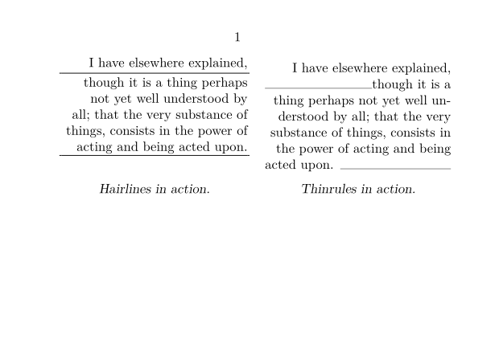
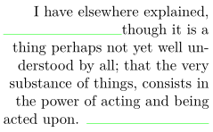

Contents
Summary
The command
\thinrule
is used to draw a line.
Description
\thinrule
s are very similar to
\hairline
s in that
they provide means handle TeX's primitives \hrule and \vrule conveniently, or -- as the ConTeXt source puts it -- “free us from some specifications”.
The \thinrule command draws a rule on the current baseline, whereas an \hairline does exactly the same except that it creates a new paragraph for the rule alone. To the extent that the outcome of \hairline might depend on your paragraph settings and that they will always span the whole surrounding box horizontally, while \thinrules stay subordinate to the paragraph they occur inside.
The rule can be configured using \setupthinrules, but only horizontal options apply.
Examples
Example 1
The following example demonstrates the behaviour of \thinrule versus \hairline (MkII and MkIV).
\setupcombinations[style=\em] \starttext \startcombination[2*1] {\framed[width=4cm,align=left,frame=off]{% I have elsewhere explained, \hairline though it is a thing perhaps not yet well understood by all; that the very substance of things, consists in the power of acting and being acted upon. \hairline}} {Hairlines in action.} % {\framed[width=4cm,align=left,frame=off]{% I have elsewhere explained, \thinrule though it is a thing perhaps not yet well understood by all; that the very substance of things, consists in the power of acting and being acted upon. \thinrule}} {Thinrules in action.} \stopcombination \stoptext
- 
Example 2
-
\setupthinrules[color=green] {\framed[width=4cm,align=left,frame=off]{% I have elsewhere explained, \thinrule though it is a thing perhaps not yet well understood by all; that the very substance of things, consists in the power of acting and being acted upon. \thinrule}}
- 
Notes
See also
- pack-mrl.mkiv
- \hairline
- \fillinrules for rules for multiple-line answers.
- \fillinline for a 'write your answer here' rule at the end of the current line
- \setupthinrules for configuration
- \thinrules